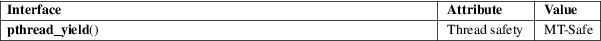

pthread_yield − yield the processor
POSIX threads library (libpthread, −lpthread)
#define
_GNU_SOURCE /* See feature_test_macros(7) */
#include <pthread.h>
[[deprecated]] int pthread_yield(void);
Note: This function is deprecated; see below.
pthread_yield() causes the calling thread to relinquish the CPU. The thread is placed at the end of the run queue for its static priority and another thread is scheduled to run. For further details, see sched_yield(2)
On success, pthread_yield() returns 0; on error, it returns an error number.
On Linux, this call always succeeds (but portable and future-proof applications should nevertheless handle a possible error return).
For an explanation of the terms used in this section, see attributes(7).

On Linux, this function is implemented as a call to sched_yield(2).
None.
Deprecated since glibc 2.34. Use the standardized sched_yield(2) instead.
pthread_yield() is intended for use with real-time scheduling policies (i.e., SCHED_FIFO or SCHED_RR). Use of pthread_yield() with nondeterministic scheduling policies such as SCHED_OTHER is unspecified and very likely means your application design is broken.
sched_yield(2), pthreads(7), sched(7)